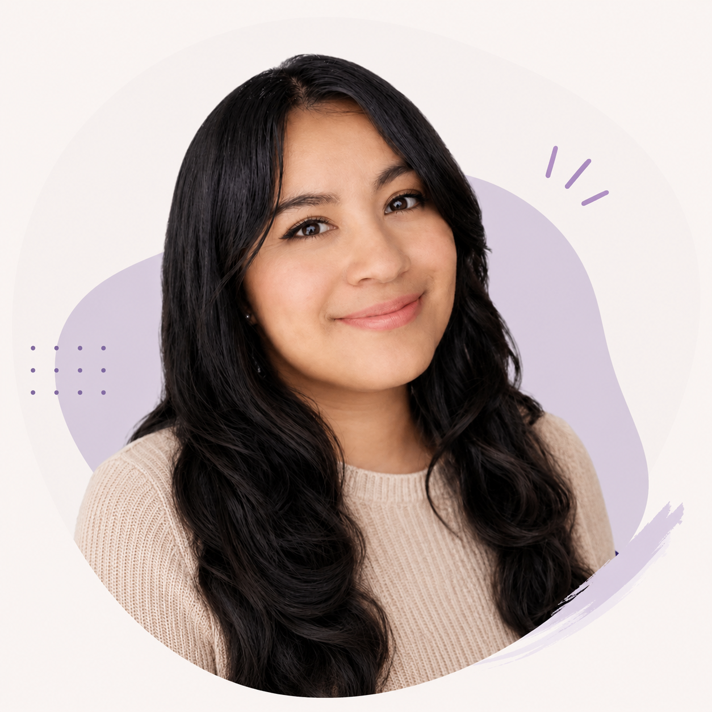

🛠 Tecnologías
Git
HTML
CSS
JS

Conóceme un poco más
Código, creatividad y una buena canción
La música que me acompaña mientras creo nuevos proyectos
Apasionada por la tecnología, el diseño web y el aprendizaje continuo. Inicié este camino porque me fascina cómo unas cuantas líneas de código pueden transformarse en herramientas útiles y soluciones reales para las personas. Creo firmemente que la curiosidad y la perseverancia son grandes aliadas en el desarrollo de software, por eso siempre estoy construyendo, experimentando y aprendiendo nuevas tecnologías para seguir creciendo como desarrolladora.
Git
HTML
CSS
JS
Videos que acompañan mi aprendizaje y mi camino como desarrolladora.
Un contenido que me ayuda a aprender nuevas ideas y mejorar mis habilidades.
Inspiración para seguir creciendo en tecnología.
Ideas y herramientas que forman parte de mi proceso.